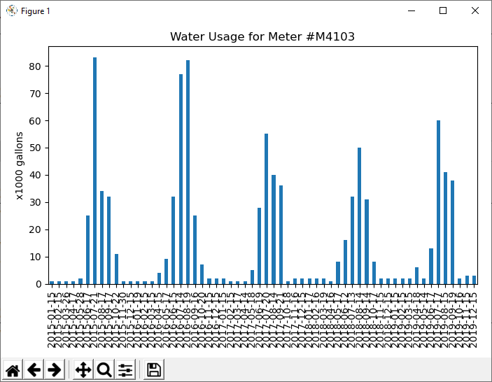

10 Checkpoint: Data Visualization
Overview
Complete this individual checkpoint assignment to demonstrate
that you can write code that uses pandas to read a
DataFrame from a CSV file and draw a vertical bar plot.
Helpful Documentation
- The prepare content for the previous lesson includes example code for reading a CSV file into DataFrame and for filtering the rows of a DataFrame.
- The prepare content for this lesson includes example code for drawing a vertical bar plot.
- The
pandasGetting Started Tutorials contain a helpful short section about creating plots. - The
pandasUser Guide contains a long section about creating plots.
Assignment
Write a Python program named visualize_check.py that
uses pandas and matplotlib.pyplot to do
the following:
- Read the water usage data from the
water.csvfile. - Filter the data to only the rows for meter M4103.
- Define and show a vertical bar plot that shows the readDate on the x-axis and the water usage on the y-axis like the plot shown in the Sample Run section.
Sample Run
> python check_solution.py

Testing Procedure
Run your program and verify that it draws a vertical bar plot like the one shown in the sample run section above.
Sample Solution
When your program is finished, view the sample solution for this assignment to compare your solution to that one. Before looking at the sample solution, you should work to complete this checkpoint program first. However, if you have worked on it for at least an hour and are still having problems, feel free to use the sample solution to help you finish your program.
Submission
When complete, report your progress in the associated I-Learn quiz.